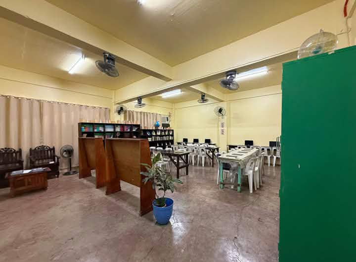

Photo of the school library.
About Our School Library
The library is one of the school's learning facilities where students can read, study, and use available learning materials. It provides a space for learners to spend time reading and to access books that can support their school activities and studies. The library also helps encourage students to develop their reading habits and become more independent learners. This website prototype includes a book catalog where students can browse book titles and check their availability. It also includes a student visit log and a section for library rules and regulations. These features are intended to help organize basic library information and records.
School Background
Don Jose M. Ynares Sr. Memorial National High School is a public secondary school located in Barangay San Carlos, Binangonan, Rizal. It first opened in June 1998 as an annex of Vicente Madrigal National High School. It later became an independent school as the number of students increased. The school carries the motto "Dunong at Dangal," which means "Wisdom and Honor."
Source: School history page
Photo of the school campus.